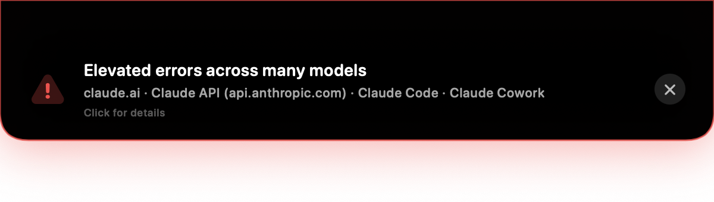
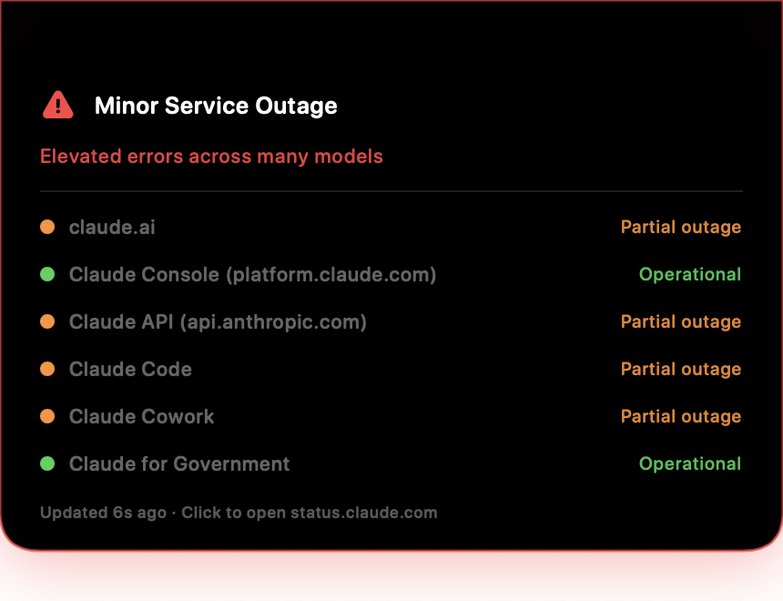

ClaudeNotch watches status.claude.com. On incident: the notch drops down with the details, your screen edges flash red. Resolved: everything retracts.
Live demo — floating tutorial badge, hover-the-notch confetti, incident alert, red edge pulse that outlines the notch.
A smooth spring animation extends the notch into an alert card with the incident title and affected components. Auto-retracts after 30 s.
Mouse over — or just click — the notch any time: live health panel for every Claude component, plus a real measured API round-trip.
While an incident is active, the screen edges pulse red — and the flash outlines the notch instead of hiding under it.
First launch floats a hint badge under the notch. Complete the hover and the panel celebrates. Respects Reduce Motion.
Pure Swift/SwiftUI + AppKit. No Electron, no dependencies, no analytics. Talks to exactly one status endpoint.
Mirrored or shared screen? Alerts hold back until you're presenting no more. Amber icon for minor wobbles, red for real outages.

Real screenshot — an actual live incident, minutes after the app was built.

Hover panel — live component health, any time.
One line, done — installs the latest release, clears quarantine, launches (read the script):
curl -fsSL https://raw.githubusercontent.com/hidrogenone/ClaudeNotch/main/install.sh | bash
Prefer clicking? Grab ClaudeNotch.dmg from the latest release, drag to Applications, right-click → Open. If macOS refuses: System Settings → Privacy & Security → Open Anyway.
Then hover your notch — the first-run tutorial (and its confetti) takes it from there. Launch-at-login is on by default; everything's a toggle in the menu.